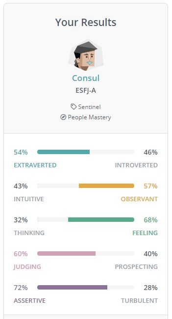

Welcome! I'm Aileen
WFH Full Time Employee, Part time Student, Sydney NSW
WFH Full Time Employee, Part time Student, Sydney NSW

Results Extracted from (09/09/2021): 16 Personalities - NERIS Analytics Ltd
The results of this test are close to accurate to what I think my personality is. Depending on the situation, I would activate my extrovert-ness or introvert-ness. In a team situation, I would most likely stay true to results reflected in the test with not much influence as I'm assertive if needed when it comes to sharing of ideas I'm confident in. I put on an observance stance to allow for others to feel comfortable to contribute and collaborate. I would consider looking for team members that are different from me so as the project can be looked at different angles. For example, I would see for people that are thinkers by nature versus feeling and a mix of introverts and extroverts.
According to SOAR (2021), there are often 3 learning styles that are identified in students:
Results Extracted from (12/09/2021): Truity Psychometrics LLC (2021)
Some of the Big Five test results shocked me in the percentage aspects on various dimensions of my personality. On the one hand, in the dimension of Neuroticism, I disagree with the slightly high result of 'tendency to experience negative emotions' as I consider my outlook in situations to always try to look on the bright side of things. On the other hand, the openness was accurate in that I do tend to be a bit more cautious and reserved with new ideas. These results may influence me to try to adjust and adapt more to people's ideas and make a conscious effort to understand where they are coming from. When forming a team, I hope to find other likeminded individuals that are open to new ideas. I would also hope to work with team members that are also logical and practical as we have limited time with assignments.